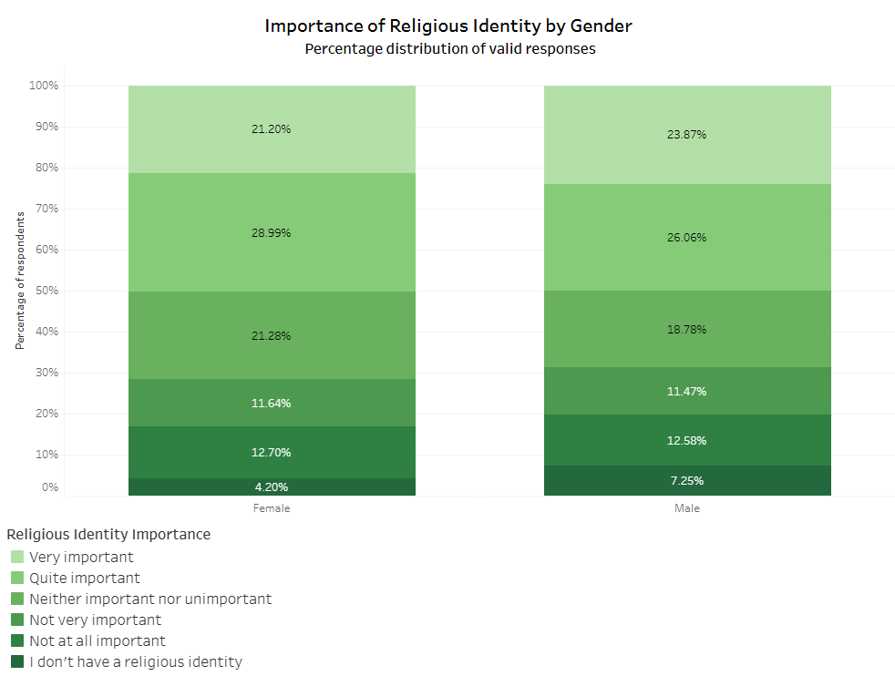
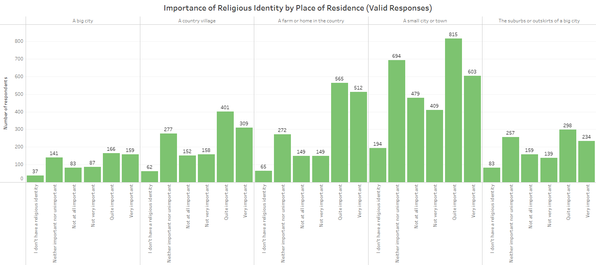

Does Gender Play a Role in the Importance of Religious Identity in 16-Year-Olds in Northern Ireland?

Click the image above to open the full case study.
Download Full Case Study (PDF)
Overview
This project was completed as part of the Mayerfeld Consulting Practicum Program. Using the Young Life and Times (YLT) Survey (2003–2012), our team investigated whether gender influences the importance placed on religious identity among 16-year-olds in Northern Ireland.
The project focused on analysing survey results, interpreting findings, and presenting insights through data visualisations.
My Contribution
This was a collaborative group project completed as part of the Mayerfeld Consulting Practicum Program. Alongside contributing to the report, I led the coordination of the project to help ensure it was completed and submitted on time.
- Led project coordination by organising tasks, tracking progress against deadlines, following up with team members, and ensuring the project stayed on schedule.
- Created and organised the Group 5 task tracker before the first team meeting to coordinate responsibilities and monitor progress.
-
Co-created the Tableau visualisations used in the final report, including:
- Stacked Bar Chart – Gender × Religious Identity Importance
- Clustered Bar Chart – Place of Residence × Religious Identity Importance
- Wrote the Introduction, Why the Research Matters, Interpretation of Results, Impact of Findings, and Conclusion.
- Assembled the final report, including the table of contents and references.
- Submitted the completed case study and supporting files on behalf of the group.
Skills Applied
- Tableau
- Data Visualisation
- Survey Data Analysis
- Statistical Interpretation
- Research
- Project Coordination
- Team Collaboration
- Report Writing
Dataset
Young Life & Times Survey (2003–2012)
- 9,168 respondents
- Repeated cross-sectional survey
- Survey of 16-year-olds in Northern Ireland
Objective
Investigate whether gender plays a role in the importance individuals place on religious identity among 16-year-olds in Northern Ireland.
Visualisations
Importance of Religious Identity by Gender
Importance of Religious Identity by Place of Residence

Key Findings
- Male and female respondents showed broadly similar patterns in how important they considered religious identity.
- Some differences were observed across individual response categories, but the overall distributions were comparable.
- Place of residence showed variation in responses, with religious identity importance differing across urban and rural settings.
- The analysis demonstrated how survey data can be used to explore demographic patterns and support evidence-based conclusions.
Outcome
This project strengthened my experience working within a collaborative analytics team, leading project coordination, producing professional data visualisations, interpreting statistical findings, and delivering a comprehensive analytical report.
Download Full Case Study (PDF)